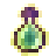
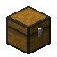
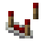
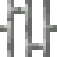
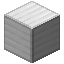
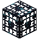

Materiais, essências e itens úteis.

Orbe de Mana
O coração de todas as receitas mágicas. Também serve de alimentação no Nature Infuser para fortalecer a armadura e a espada de Manilium.
Como obter
Minere o Minério de Mana com picareta de diamante ou melhor (Fortuna aumenta). Ou faça com Essência de Mana:
Bancada de trabalho
➜ 
Essência de Mana
Energia de mana pura, usada para criar Orbes de Mana, o Coletor da Alma e o molde de Manilium.
Como obter
Todo mago (zumbis magos, Zumbi Necromante e Mago Midas) tem 10% de chance de soltar uma.

Essência do Void
Um pedaço do nada. Ingrediente do Bloco de Void.
Como obter
Jogue uma Orbe de Mana no void (abaixo do fundo do mundo ou fora da ilha do End). Quem jogou recebe uma essência por orbe.

Cristal Instável
O Cristal Instável: um diamante carregado pela natureza. Aparece em quase todas as receitas do mod.
Nature Infuser
em cima: entrada · embaixo: alimentação

Estilhaço Instável
Um pedaço de Diamante Instável. Junte 4 na bancada para formar um Diamante Instável inteiro: um jeito de conseguir diamantes instáveis lutando, sem precisar do Nature Infuser.
Como obter
Cai dos Espíritos Elementais (8%, mais com Pilhagem), da Sentinela Arcana (2 a 4) e do baú da Torre Arcana.
Bancada de trabalho
➜ Fruta de Mana
Cai das folhas da Árvore de Mana (6%, mais com Fortuna). Comer devolve 2 de mana na hora (e mata a fome como uma maçã).
Como obter
Quebre as Folhas de Mana.
Cristal de Teleporte
Shift + direito marca o lugar onde você está. Depois, segure direito por 1,5s para voltar até lá, gastando mana: 1 + 1 a cada 250 blocos (no máximo 8). Só funciona na mesma dimensão; recarga de 5s.
Cristal de Teleporte Estabilizado
Também viaja entre dimensões (Nether, End...), por +2 de mana.

Lua Roxa
Um pedaço da Lua Roxa. Faz o Cristal de Teleporte Estabilizado e o Ritual do Conhecimento.
Como obter
Monstros da Lua Roxa soltam (35%); o Arauto da Lua Roxa solta 4 a 6.

Molde de Ferraria
Molde da mesa de ferraria que transforma equipamento de netherita em Manilium.
Nature Infuser
em cima: entrada · embaixo: alimentação
Conversor de Almas
Quando falta mana, paga a diferença com o seu XP: 10 pontos de XP = 1 de mana. Funciona no inventário, no slot de amuleto do Curios (aparece no peito, estilo reator) ou embutido em qualquer peitoral.
Bancada de trabalho



Nature Infuser
qualquer peitoral recebe o conversor embutido · em cima: entrada · embaixo: alimentação
Ovo de Alma
Ovo gerador feito pelo Coletor da Alma para criaturas que não têm ovo próprio. Funciona como um ovo gerador comum, inclusive para escolher a criatura do Spawner de Manilium.
Como obter
Coletor da Alma com o DNA de uma criatura sem ovo + ovo + frasco de XP.
Spawner Quebrado
O que sobra de um spawner quebrado. Pode ser consertado.
Como obter
Quebre um spawner comum (fora do criativo).
Bancada de trabalho


Spawner sem Vida
Um spawner consertado, mas ainda sem vida. Precisa de Manilium para despertar.
Nature Infuser
+
 ➜
➜
em cima: entrada · embaixo: alimentação